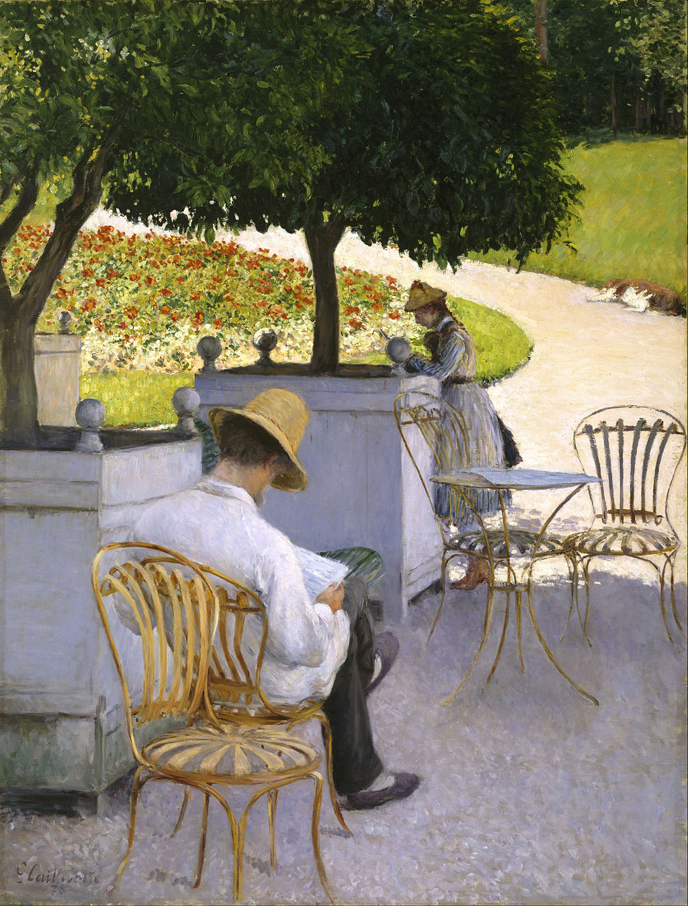

<head>
<meta charset="UTF-8" />
<meta name="keywords" content="drawing, painting" />
<meta name="description" content="drawings by Sunjy" />
<title>Sunjy</title>
<link rel="shortcut icon" type="image/x-icon" href="../../mImages/mCommon/favicon.ico" media="screen" />
<link rel="stylesheet" type="text/css" href="../../mCsses/mCommon/mCssA.css" />
<link rel="stylesheet" type="text/css" href="../../mCsses/mCommon/mCssB.css" />
<link rel="stylesheet" type="text/css" href="../../mCsses/mCommon/mCssC.css" />
<link rel="stylesheet" type="text/css" href="../../mCsses/mCommon/mCssD.css" />
<link rel="stylesheet" type="text/css" href="../../mCsses/mContent/mCssA.css" />
<link rel="stylesheet" type="text/css" href="../../mCsses/mContent/mCssB.css" />
<link rel="stylesheet" type="text/css" href="../../mCsses/mContent/mCssC.css" />
<link rel="stylesheet" type="text/css" href="../../mCsses/mContent/mCssD.css" />
</head>
<script type="text/javascript" src="../../mScripts/mContent/mContentAA.js" /></script>
<script type="text/javascript" src="../../mScripts/mContent/mContentAB.js" /></script>
<script type="text/javascript" src="../../mScripts/mContent/mContentAC.js" /></script>
<script type="text/javascript" src="../../mScripts/mContent/mContentAD.js" /></script>
<script type="text/javascript"></script> 
<script type="text/javascript">
document.write('<div class="mImgAbsolute"></div>');
/*
document.write('<p class="mFontSizeBColor" />From a white paper...</p>');
document.write('<table class="center"><tr><td>');
document.write('');
document.write('</td></tr></table>');
*/
</script>


<script type="text/javascript">
document.write('<p class="mFontSizeBColor" />The Orange Trees</p>');
document.write('<p class="mFontSizeSColor" />“The Orange Trees” by Gustave Caillebotte portrays Caillebotte’s brother Martial reading in the shade of the orange trees. Their cousin, Zoé, is standing at one of the garden planters, which contain the trees.<br><br>The poses of both suggest that they are each enjoying the afternoon quietly with their private thoughts. The sunlight illuminates a circular flower bed surrounded by a curving path, at the edge of which is a sleeping dog.<br><br>Caillebotte has composed a sharp contrast between the shady foreground in the lower part of the image and the bright background.<br><br>The shadows are painted in muted greens and purples, while the lawn and flower beds are brilliant greens, reds, and whites.<br><br>Caillebotte painted this canvas en Plein air at the family’s country estate in Yerres.<br><br>Impressionist painters were known for painting outdoors; however, large canvases such as this, painted outdoors, were uncommon due to the difficulties in creating such a large work quickly, before the light changed.<br><br>Caillebotte was a friend of many of the impressionist painters, and this painting is part of that tradition; however, it differs in its realism and reliance on-line and not broad brush strokes.<br><br>It also reflects Caillebotte’s interest in photography. The figure of Zoé in the background appears out of focus, while the chairs in the foreground are in sharper focus.<br><br>The cropping of the orange tree, further suggests the influence of photography.<br></p>');
document.write('<table class="center" /><tr><td>');
document.write('<br>The poses of both suggest that they are each enjoying the afternoon quietly with their private thoughts. The sunlight illuminates a circular flower bed surrounded by a curving path, at the edge of which is a sleeping dog.<br><br>Caillebotte has composed a sharp contrast between the shady foreground in the lower part of the image and the bright background.<br><br>The shadows are painted in muted greens and purples, while the lawn and flower beds are brilliant greens, reds, and whites.<br><br>Caillebotte painted this canvas en Plein air at the family’s country estate in Yerres.<br><br>Impressionist painters were known for painting outdoors; however, large canvases such as this, painted outdoors, were uncommon due to the difficulties in creating such a large work quickly, before the light changed.<br><br>Caillebotte was a friend of many of the impressionist painters, and this painting is part of that tradition; however, it differs in its realism and reliance on-line and not broad brush strokes.<br><br>It also reflects Caillebotte’s interest in photography. The figure of Zoé in the background appears out of focus, while the chairs in the foreground are in sharper focus.<br><br>The cropping of the orange tree, further suggests the influence of photography.<br>" />');
document.write('</td></tr></table>');
</script>


